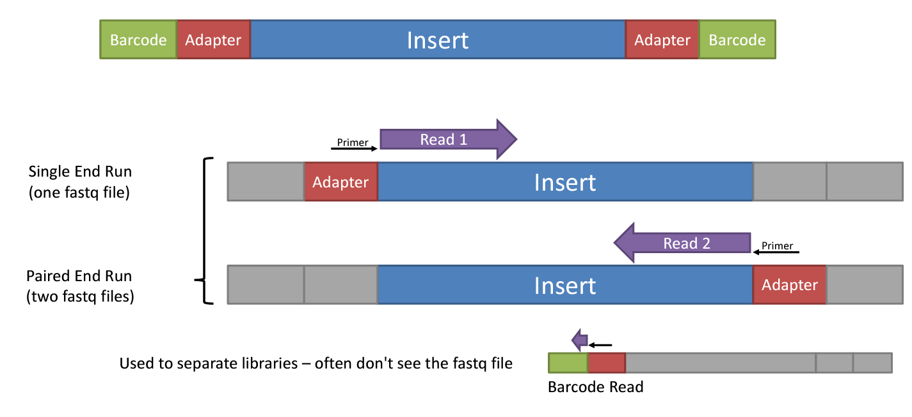

2 Main Sequencing Technologies
Short Reads sequencing (Illumina)
It consist in The polymerase-mediated Sequencing by synthesis (SBS), this works by coupling the four DNA bases to fluorescent markers alongside a terminator chemical group that pauses DNA synthesis. While DNA is being synthesized, each fluorescent marker is optically verified before the tag and terminator are removed, and the next step in the sequence is recorded.

#1. Cluster generation
Adapter attached to the DNA fragment is used to hybridisation to the flowcell, subsequentlty PCR amplification (bridge amplification) generates a cluster of the same sequence fragment to amplify the signal when the nucleotide base is synthesized, thus obtaining a multiple cluster on a Flow Cell.
#2. Sequencing
On each cycle is incorporated one nucleotide to the template, it correspond to the read length (100 cycles equal to 100 bp read length). In each incorportation is imaged the fluorescent signal that indicates the base incorporated, and the terminator is removed to start the next cycle.
During Library preparation adapters are added to the DNA fragments, which are used to hybridize the DNA to the flow cell, and also act as barcaodes to identify the sample, when multiples samples are pooled in the same run. Depending on the type of sequencing, the adapater can be added to one end of the fragment (single end) or both ends (paired end).
{kind=link}
Single end
Correspond to the basis of SBS, where the nucleotides added to the template sequence is read from one end of the fragment. It’s more simple and effcient, also a reduce number of steps during the library preparation is required. However, the quality of nucleotides decreases as the sequencing process progresses, so the ends of the reads tend to have lower quality scores.
Paired end
source: https://systemsbiology.columbia.edu/genome-sequencing-defining-your-experiment#:~:text=Single%2Dend%20vs.&text=In%20single%2Dend%20reading%2C%20the,opposite%20end%20of%20the%20fragment.
During library preparation are incorporated sequencing primers binding site at both ends of the DNA fragments. This allows to reading at one read, when it finishes this direction at the specified read lenght, then starts another round of reading from the opposite end of the fragment.
It improves:
The confidence of the sequence read
The ability to identify the relative positions of various reads in the genome (much more efficient in resolve rearrangements such as insertions, deletions or inversions)
Can improve the assembly of repetitive regions.
On the ohter hand is more expensive and time-consuming (respect single end)
See also
See the Illumina_sequencing_by_synthesis_workflow video by Illumina to visualize the concepts of SBS.
For more information
Long read sequencing (Nanopore)
Use flow cells which contain an array of tiny holes — nanopores (protein pore) — embedded in an electro-resistant membrane. Each nanopore corresponds to its own electrode connected to a channel and sensor chip, which measures the electric current that flows through the nanopore. When a molecule passes through a nanopore, the current is disrupted to produce a characteristic ‘squiggle’. The squiggle is then decoded using basecalling algorithms to determine the DNA or RNA sequence in real time. In an electrolytic solution, a constant voltage is applied to produce an ionic current through the nanopore such that negatively charged single-stranded DNA or RNA molecules are driven through the nanopore from the negatively charged ‘cis’ side to the positively charged ‘trans’ side. Translocation speed is controlled by a motor protein that ratchets the nucleic acid molecule through the nanopore in a step-wise manner. Changes in the ionic current during translocation correspond to the nucleotide sequence present in the sensing region and are decoded using computational algorithms, allowing real-time sequencing of single molecules. In addition to controlling translocation speed, the motor protein has helicase activity, enabling double-stranded DNA or RNA–DNA duplexes to be unwound into single-stranded molecules that pass through the nanopore.

A basecaller translates raw signals into DNA sequence data (FASTQ). The basecaller uses a neural network to predict the most likely DNA sequence based on the raw signal data.
See also
See the Nanopore_sequencing_workflow video by Oxford Nanopore Technologies to visualize the concepts of Nanopore sequencing.
FASTQ format and Phred quality score
The raw data generated by the sequencer is stored in FASTQ format, which contains the sequence of nucleotides and their corresponding quality scores. It it’s divided in four lines:
Sequence identifier: starts with ‘@’ and contains information about the read. Such as the instrument, run ID, flow cell ID, lane, tile, x, y coordinates, and read number.
Sequence: the nucleotide sequence of the read.
Quality identifier: starts with ‘+’ and contains the same information as the sequence identifier. Or it may be empty and in some cases is used for metadata.
Quality scores: the Phred quality score for each base in the read. The Phred quality score is a measure of the quality of the base call, which is calculated as -10 * log10(P), where P is the probability of the base call being incorrect. The quality score is represented as an ASCII character, with a score of 0 represented by ‘!’, and a score of 41 represented by ‘J’. The higher the quality score, the more confident we are in the base call.
Note
The @ symbol can not be used for count the number of reads, because it could also appear as a quality score symbol.
{kind=link}